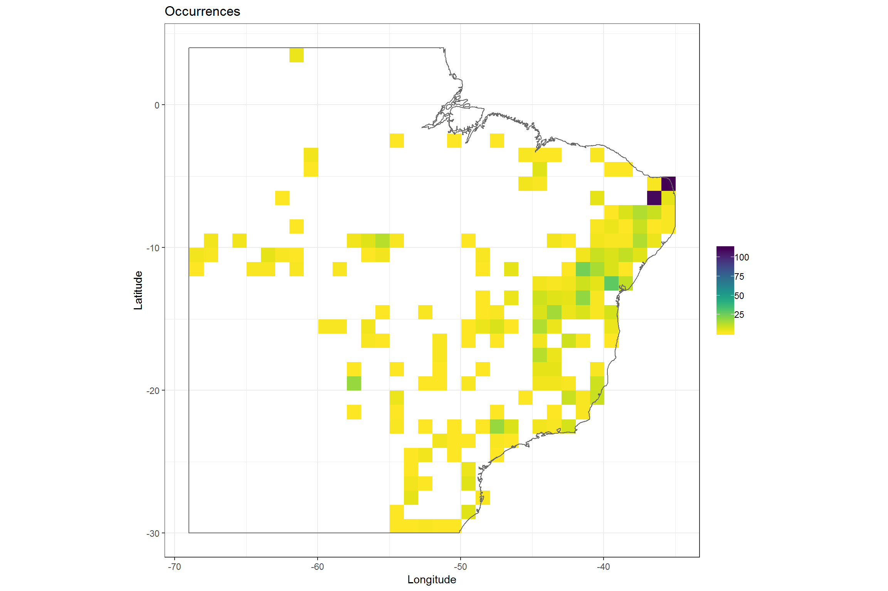
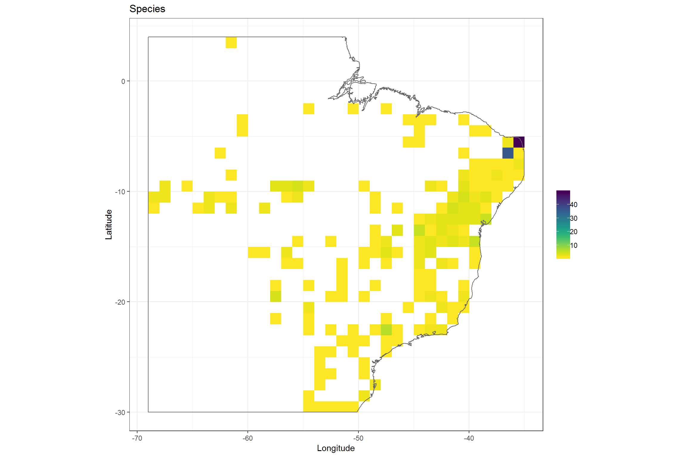
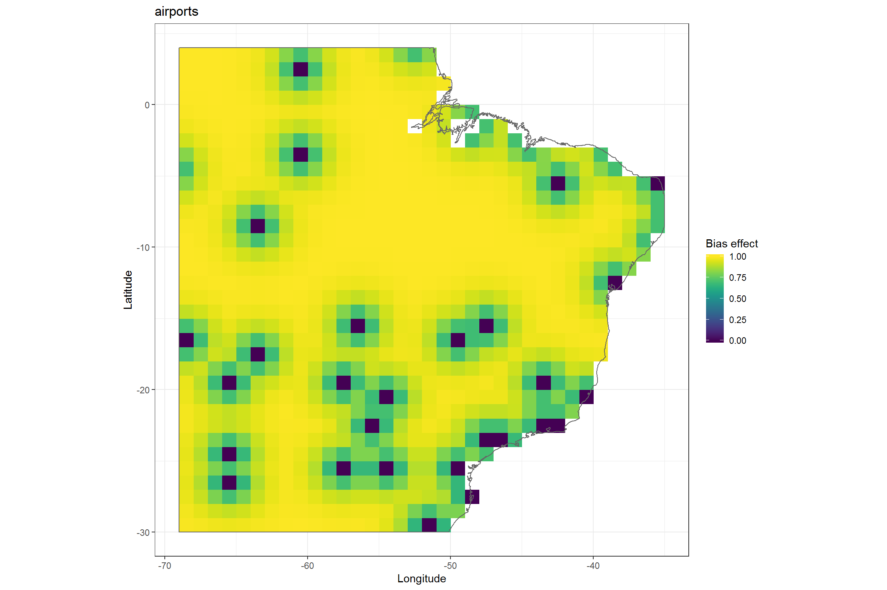
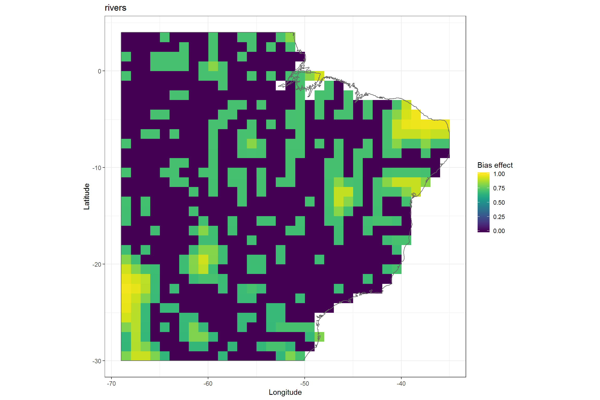
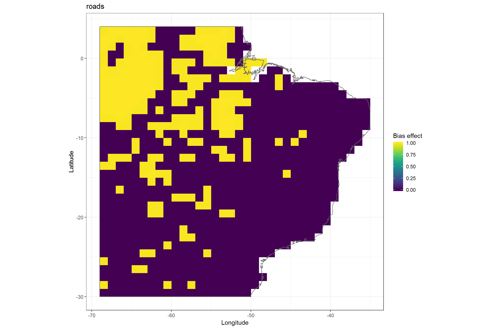
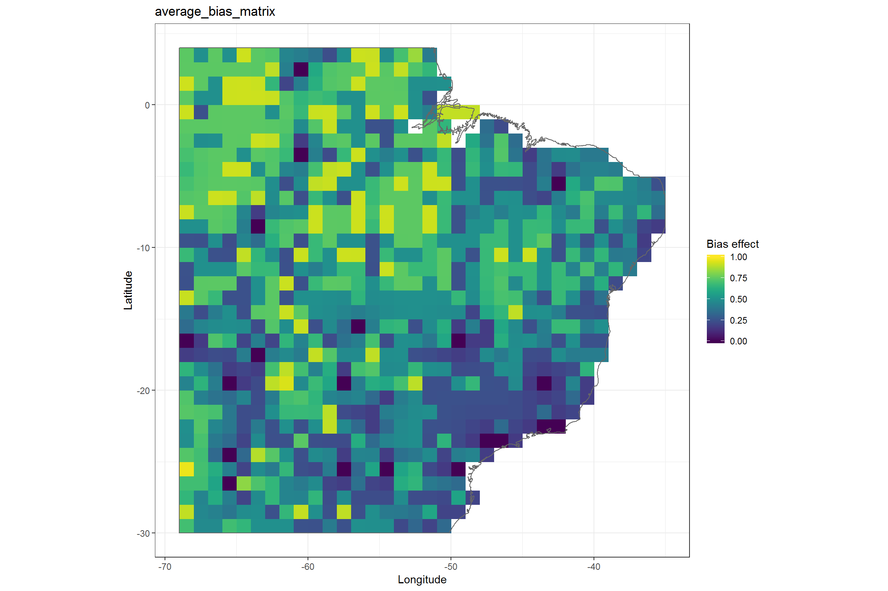

You will need the following R libraries for this exercise, just copy the code chunk into you R console to load them. You might need to install some of them separately.
library(tidyverse)
library(sampbias)occ <- read_csv("inst/occurrence_records_clean.csv") %>% mutate(decimallongitude = decimalLongitude) %>%
mutate(decimallatitude = decimalLatitude)bias.out <- SamplingBias(x = occ, res = 1)
## Adjusting to terrestrial surface... Done.
## Creating occurrence raster... Done
## Creating species raster... Done
## Calculating distance raster... Done
## Extracting values... Done
## Calculating likelihood...
## rescale factor: 4250000 850000
## [1] 48.30239
##
## rescale factor: 1750000 350000
## [1] 99.99993
##
## rescale factor: 1750000 350000
## [1] 14.4285
##
## rescale factor: 2250000 450000
## [1] 99.99993
## Done
## Preparing output... Done# summarize results
summary(bias.out)
# Visualize
plot(bias.out)
## Number of occurences: 864
## Number of species: 98
## Raster resolution: 1
## Distance binsize: 1e+05
## Convexhull: FALSE
## Geographic extent:
## class : Extent
## xmin : -69
## xmax : -35
## ymin : -30
## ymax : 4
## Bias effect at distance:
## 0 10000
## airports 0 1.136462e-04
## cities 0 5.712649e-04
## rivers 0 8.244518e-05
## roads 0 4.443454e-04?SamplingBias and try to change the relevant arguments to improve the results. Summarize and visualize again.bias.det <- SamplingBias(x = occ, res = 0.1)
# summarize results
summary(bias.det)
# Visualize
par(mfrow = c(3, 2))
plot(bias.det)